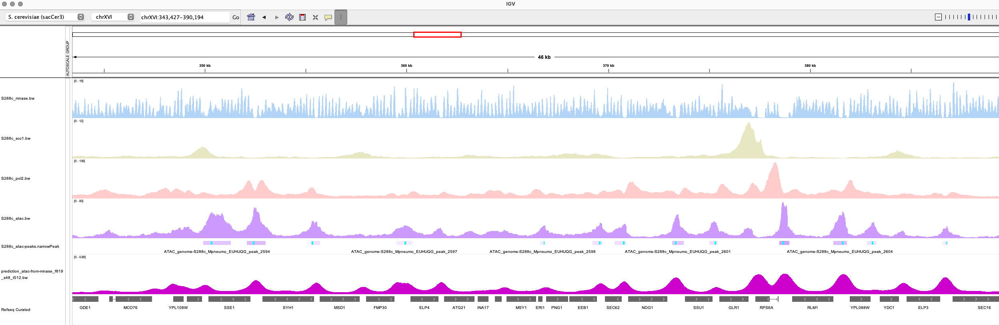

Deep learning with momics: ChromNN and MomicsDataset¶
momics provides several useful resources to train neural networks with tensorflow using multi-omics data. This notebook demonstrates how to compile and train the ChromNN neural network with momics and tensorflow.
Connect to the data repository¶
For this notebook, we will tap into the repository generated in the previous tutorial.
[ ]:
from momics import momics as mmm
## Creating repository
repo = mmm.Momics("yeast_CNN_data.momics")
## Check that sequence and some tracks are registered
repo.seq()
repo.tracks()
momics :: INFO :: 2025-06-23 20:46:17,994 :: No cloud config found for momics.Consider populating `~/.momics.ini` file with configuration settings for cloud access.
| idx | label | path | |
|---|---|---|---|
| 0 | 0 | atac | /home/jaseriza/repos/momics/data/S288c_atac.bw |
| 1 | 1 | scc1 | /home/jaseriza/repos/momics/data/S288c_scc1.bw |
| 2 | 2 | mnase | /home/jaseriza/repos/momics/data/S288c_mnase.bw |
| 3 | 3 | pol2 | /home/jaseriza/repos/momics/data/S288c_pol2.bw |
| 4 | 4 | atac_rescaled | tmpcoqnaya3 |
| 5 | 5 | scc1_rescaled | tmp3ecesx22 |
| 6 | 6 | mnase_rescaled | tmpde2rine8 |
| 7 | 7 | pol2_rescaled | tmpwrvmrp1u |
Train ChromNN neural network¶
Define genomic coordinates for training/testing/validation¶
We will define a simple convolutional neural network with tensorflow to predict the target variable ATAC from the feature variable MNase. This requires to first define a set of genomic coordinates to extract genomic data from. We will use mnase_rescaled coverage scores over tiling genomic windows (features_size of 1024, with a stride of 256) as feature variables to predict atac_rescaled coverage scores over the same tiling genomic windows. We can split the data
into training, testing and validation sets, using momics.utils.split_ranges().
[ ]:
import momics.utils as mutils
# Fetch data from the momics repository
features_size = 1024
stride = 48
bins = repo.bins(width=features_size, stride=stride, cut_last_bin_out=True)
bins = bins.subset(lambda x: x.Chromosome != "XVI")
bins_split, bins_test = mutils.split_ranges(bins, 0.8)
bins_train, bins_val = mutils.split_ranges(bins_split, 0.8)
bins_train
| Chromosome | Start | End | |
|---|---|---|---|
| 0 | I | 115200 | 116224 |
| 1 | I | 1280 | 2304 |
| 2 | I | 99328 | 100352 |
| 3 | I | 118272 | 119296 |
| 4 | I | 228864 | 229888 |
| ... | ... | ... | ... |
| 27982 | XV | 620032 | 621056 |
| 27983 | XV | 576256 | 577280 |
| 27984 | XV | 593152 | 594176 |
| 27985 | XV | 652032 | 653056 |
| 27986 | XV | 183808 | 184832 |
27987 rows × 3 columns
Define datasets for training/testing/validation¶
We now need to define different datasets, for training, testing and validation. We will use momics.dataset.MomicsDataset() constructor, indicating the batch size we wish to use in the training process.
[ ]:
from momics import dataset as mmd
features = "mnase_rescaled"
target = "atac_rescaled"
target_size = 1024
batch_size = 500
train_dataset = (
mmd.MomicsDataset(repo, bins_train, features, target, target_size=target_size, batch_size=batch_size)
.shuffle(10)
.prefetch(2)
.repeat()
)
val_dataset = mmd.MomicsDataset(repo, bins_val, features, target, target_size=target_size, batch_size=batch_size)
test_dataset = mmd.MomicsDataset(repo, bins_test, features, target, target_size=target_size, batch_size=batch_size)
train_dataset
2025-06-23 20:46:18.433989: I tensorflow/core/util/port.cc:153] oneDNN custom operations are on. You may see slightly different numerical results due to floating-point round-off errors from different computation orders. To turn them off, set the environment variable `TF_ENABLE_ONEDNN_OPTS=0`.
2025-06-23 20:46:18.443317: E external/local_xla/xla/stream_executor/cuda/cuda_fft.cc:477] Unable to register cuFFT factory: Attempting to register factory for plugin cuFFT when one has already been registered
WARNING: All log messages before absl::InitializeLog() is called are written to STDERR
E0000 00:00:1750704378.455317 2288499 cuda_dnn.cc:8310] Unable to register cuDNN factory: Attempting to register factory for plugin cuDNN when one has already been registered
E0000 00:00:1750704378.458679 2288499 cuda_blas.cc:1418] Unable to register cuBLAS factory: Attempting to register factory for plugin cuBLAS when one has already been registered
2025-06-23 20:46:18.471233: I tensorflow/core/platform/cpu_feature_guard.cc:210] This TensorFlow binary is optimized to use available CPU instructions in performance-critical operations.
To enable the following instructions: AVX2 AVX512F AVX512_VNNI AVX512_BF16 AVX512_FP16 AVX_VNNI AMX_TILE AMX_INT8 AMX_BF16 FMA, in other operations, rebuild TensorFlow with the appropriate compiler flags.
I0000 00:00:1750704379.733384 2288499 gpu_device.cc:2022] Created device /job:localhost/replica:0/task:0/device:GPU:0 with 1187 MB memory: -> device: 0, name: NVIDIA RTX A2000 12GB, pci bus id: 0000:55:00.0, compute capability: 8.6
<_RepeatDataset element_spec=({'mnase_rescaled': TensorSpec(shape=(None, 1024, 1), dtype=tf.float32, name='mnase_rescaled')}, {'atac_rescaled': TensorSpec(shape=(None, 1024, 1), dtype=tf.float32, name='atac_rescaled')})>
Define a deep learning model¶
Now is time to define the model architecture. In this example, we will use ChromNN, a customizable convolutional neural network provided in momics.nn. We can instantiate the model with the number and shape of layers we want, and compile it with the desired optimizer, loss function and metrics.
[ ]:
from momics import nn
import tensorflow as tf # type: ignore
from tensorflow.keras import layers # type: ignore
## Define the model with three convolutional layers
model = nn.ChromNN(
inputs={"mnase_rescaled": layers.Input(shape=(features_size, 1), name="mnase_rescaled")},
outputs={"atac_rescaled": layers.Dense(target_size, activation="linear", name="atac_rescaled")},
filters=[32, 16, 8],
kernel_sizes=[12, 5, 5],
pool_sizes=[8, 4, 4],
).model
## Use a combination of MAE and correlation as loss function
def loss_atac(y_true, y_pred):
return nn.mae_cor(y_true, y_pred, alpha=0.9)
## Use Adam optimizer, a learning rate of 0.001, and return MAE as metric
model.compile(
optimizer=tf.keras.optimizers.Adam(learning_rate=0.001),
loss={
"atac_rescaled": loss_atac,
},
loss_weights={
"atac_rescaled": 1.0,
},
metrics={
"atac_rescaled": "mae",
},
)
model.summary()
Model: "functional"
┏━━━━━━━━━━━━━━━━━━━━━━━━━━━━━━━━━┳━━━━━━━━━━━━━━━━━━━━━━━━┳━━━━━━━━━━━━━━━┓ ┃ Layer (type) ┃ Output Shape ┃ Param # ┃ ┡━━━━━━━━━━━━━━━━━━━━━━━━━━━━━━━━━╇━━━━━━━━━━━━━━━━━━━━━━━━╇━━━━━━━━━━━━━━━┩ │ mnase_rescaled (InputLayer) │ (None, 1024, 1) │ 0 │ ├─────────────────────────────────┼────────────────────────┼───────────────┤ │ conv1d (Conv1D) │ (None, 1024, 32) │ 416 │ ├─────────────────────────────────┼────────────────────────┼───────────────┤ │ max_pooling1d (MaxPooling1D) │ (None, 128, 32) │ 0 │ ├─────────────────────────────────┼────────────────────────┼───────────────┤ │ batch_normalization │ (None, 128, 32) │ 128 │ │ (BatchNormalization) │ │ │ ├─────────────────────────────────┼────────────────────────┼───────────────┤ │ dropout (Dropout) │ (None, 128, 32) │ 0 │ ├─────────────────────────────────┼────────────────────────┼───────────────┤ │ conv1d_1 (Conv1D) │ (None, 128, 16) │ 2,576 │ ├─────────────────────────────────┼────────────────────────┼───────────────┤ │ max_pooling1d_1 (MaxPooling1D) │ (None, 32, 16) │ 0 │ ├─────────────────────────────────┼────────────────────────┼───────────────┤ │ batch_normalization_1 │ (None, 32, 16) │ 64 │ │ (BatchNormalization) │ │ │ ├─────────────────────────────────┼────────────────────────┼───────────────┤ │ dropout_1 (Dropout) │ (None, 32, 16) │ 0 │ ├─────────────────────────────────┼────────────────────────┼───────────────┤ │ conv1d_2 (Conv1D) │ (None, 32, 8) │ 648 │ ├─────────────────────────────────┼────────────────────────┼───────────────┤ │ max_pooling1d_2 (MaxPooling1D) │ (None, 8, 8) │ 0 │ ├─────────────────────────────────┼────────────────────────┼───────────────┤ │ batch_normalization_2 │ (None, 8, 8) │ 32 │ │ (BatchNormalization) │ │ │ ├─────────────────────────────────┼────────────────────────┼───────────────┤ │ flatten (Flatten) │ (None, 64) │ 0 │ ├─────────────────────────────────┼────────────────────────┼───────────────┤ │ atac_rescaled (Dense) │ (None, 1024) │ 66,560 │ └─────────────────────────────────┴────────────────────────┴───────────────┘
Total params: 70,424 (275.09 KB)
Trainable params: 70,312 (274.66 KB)
Non-trainable params: 112 (448.00 B)
Train the model¶
Now that we have the datasets and the model, we can fit the model to the training data, using the fit() method of the model. We can also evaluate the model on the testing and validation datasets. Here, we’ll quickly iterate over 10 epochs, but you can increase this number to improve the model performance.
[ ]:
import os
import numpy as np
from pathlib import Path
from tensorflow.keras.callbacks import CSVLogger, EarlyStopping, ModelCheckpoint, ReduceLROnPlateau # type: ignore
os.makedirs(".chromnn", exist_ok=True)
callbacks_list = [
CSVLogger(Path(".chromnn", "epoch_data.csv")),
ModelCheckpoint(filepath=Path(".chromnn", "Checkpoint.keras"), monitor="val_loss", save_best_only=True),
EarlyStopping(monitor="val_loss", patience=40, min_delta=1e-5, restore_best_weights=True),
ReduceLROnPlateau(monitor="val_loss", factor=0.1, patience=6 // 2, min_lr=0.1 * 0.001),
]
model.fit(
train_dataset,
validation_data=val_dataset,
epochs=30,
steps_per_epoch=int(np.floor(len(bins_train) // batch_size)),
callbacks=callbacks_list,
)
Epoch 1/30
WARNING: All log messages before absl::InitializeLog() is called are written to STDERR
I0000 00:00:1750704381.947822 2288642 service.cc:148] XLA service 0x730448004780 initialized for platform CUDA (this does not guarantee that XLA will be used). Devices:
I0000 00:00:1750704381.947844 2288642 service.cc:156] StreamExecutor device (0): NVIDIA RTX A2000 12GB, Compute Capability 8.6
2025-06-23 20:46:21.997434: I tensorflow/compiler/mlir/tensorflow/utils/dump_mlir_util.cc:268] disabling MLIR crash reproducer, set env var `MLIR_CRASH_REPRODUCER_DIRECTORY` to enable.
I0000 00:00:1750704382.212588 2288642 cuda_dnn.cc:529] Loaded cuDNN version 90300
6/55 ━━━━━━━━━━━━━━━━━━━━ 1s 25ms/step - loss: 0.3733 - mae: 0.3038
I0000 00:00:1750704385.109624 2288642 device_compiler.h:188] Compiled cluster using XLA! This line is logged at most once for the lifetime of the process.
55/55 ━━━━━━━━━━━━━━━━━━━━ 12s 131ms/step - loss: 0.3010 - mae: 0.2327 - val_loss: 0.1948 - val_mae: 0.1110 - learning_rate: 0.0010
Epoch 2/30
55/55 ━━━━━━━━━━━━━━━━━━━━ 4s 67ms/step - loss: 0.1629 - mae: 0.1041 - val_loss: 0.1916 - val_mae: 0.1106 - learning_rate: 0.0010
Epoch 3/30
55/55 ━━━━━━━━━━━━━━━━━━━━ 4s 67ms/step - loss: 0.1479 - mae: 0.0947 - val_loss: 0.2017 - val_mae: 0.1235 - learning_rate: 0.0010
Epoch 4/30
55/55 ━━━━━━━━━━━━━━━━━━━━ 4s 67ms/step - loss: 0.1403 - mae: 0.0890 - val_loss: 0.1857 - val_mae: 0.1116 - learning_rate: 0.0010
Epoch 5/30
55/55 ━━━━━━━━━━━━━━━━━━━━ 4s 67ms/step - loss: 0.1377 - mae: 0.0875 - val_loss: 0.1816 - val_mae: 0.1123 - learning_rate: 0.0010
Epoch 6/30
55/55 ━━━━━━━━━━━━━━━━━━━━ 4s 66ms/step - loss: 0.1369 - mae: 0.0872 - val_loss: 0.1740 - val_mae: 0.1086 - learning_rate: 0.0010
Epoch 7/30
55/55 ━━━━━━━━━━━━━━━━━━━━ 4s 67ms/step - loss: 0.1368 - mae: 0.0880 - val_loss: 0.1652 - val_mae: 0.1072 - learning_rate: 0.0010
Epoch 8/30
55/55 ━━━━━━━━━━━━━━━━━━━━ 4s 69ms/step - loss: 0.1359 - mae: 0.0878 - val_loss: 0.1590 - val_mae: 0.1051 - learning_rate: 0.0010
Epoch 9/30
55/55 ━━━━━━━━━━━━━━━━━━━━ 4s 69ms/step - loss: 0.1319 - mae: 0.0837 - val_loss: 0.1537 - val_mae: 0.1048 - learning_rate: 0.0010
Epoch 10/30
55/55 ━━━━━━━━━━━━━━━━━━━━ 4s 67ms/step - loss: 0.1309 - mae: 0.0838 - val_loss: 0.1490 - val_mae: 0.1018 - learning_rate: 0.0010
Epoch 11/30
55/55 ━━━━━━━━━━━━━━━━━━━━ 4s 72ms/step - loss: 0.1302 - mae: 0.0829 - val_loss: 0.1492 - val_mae: 0.1017 - learning_rate: 0.0010
Epoch 12/30
55/55 ━━━━━━━━━━━━━━━━━━━━ 4s 70ms/step - loss: 0.1298 - mae: 0.0837 - val_loss: 0.1429 - val_mae: 0.0948 - learning_rate: 0.0010
Epoch 13/30
55/55 ━━━━━━━━━━━━━━━━━━━━ 4s 69ms/step - loss: 0.1282 - mae: 0.0816 - val_loss: 0.1381 - val_mae: 0.0921 - learning_rate: 0.0010
Epoch 14/30
55/55 ━━━━━━━━━━━━━━━━━━━━ 4s 69ms/step - loss: 0.1327 - mae: 0.0870 - val_loss: 0.1391 - val_mae: 0.0927 - learning_rate: 0.0010
Epoch 15/30
55/55 ━━━━━━━━━━━━━━━━━━━━ 4s 69ms/step - loss: 0.1269 - mae: 0.0813 - val_loss: 0.1385 - val_mae: 0.0921 - learning_rate: 0.0010
Epoch 16/30
55/55 ━━━━━━━━━━━━━━━━━━━━ 4s 73ms/step - loss: 0.1264 - mae: 0.0807 - val_loss: 0.1374 - val_mae: 0.0911 - learning_rate: 0.0010
Epoch 17/30
55/55 ━━━━━━━━━━━━━━━━━━━━ 4s 74ms/step - loss: 0.1249 - mae: 0.0787 - val_loss: 0.1360 - val_mae: 0.0897 - learning_rate: 0.0010
Epoch 18/30
55/55 ━━━━━━━━━━━━━━━━━━━━ 4s 71ms/step - loss: 0.1273 - mae: 0.0821 - val_loss: 0.1284 - val_mae: 0.0831 - learning_rate: 0.0010
Epoch 19/30
55/55 ━━━━━━━━━━━━━━━━━━━━ 4s 70ms/step - loss: 0.1249 - mae: 0.0808 - val_loss: 0.1303 - val_mae: 0.0850 - learning_rate: 0.0010
Epoch 20/30
55/55 ━━━━━━━━━━━━━━━━━━━━ 4s 79ms/step - loss: 0.1245 - mae: 0.0797 - val_loss: 0.1279 - val_mae: 0.0834 - learning_rate: 0.0010
Epoch 21/30
55/55 ━━━━━━━━━━━━━━━━━━━━ 4s 74ms/step - loss: 0.1238 - mae: 0.0789 - val_loss: 0.1275 - val_mae: 0.0831 - learning_rate: 0.0010
Epoch 22/30
55/55 ━━━━━━━━━━━━━━━━━━━━ 4s 72ms/step - loss: 0.1235 - mae: 0.0782 - val_loss: 0.1274 - val_mae: 0.0831 - learning_rate: 0.0010
Epoch 23/30
55/55 ━━━━━━━━━━━━━━━━━━━━ 4s 76ms/step - loss: 0.1226 - mae: 0.0782 - val_loss: 0.1282 - val_mae: 0.0832 - learning_rate: 0.0010
Epoch 24/30
55/55 ━━━━━━━━━━━━━━━━━━━━ 4s 75ms/step - loss: 0.1243 - mae: 0.0787 - val_loss: 0.1251 - val_mae: 0.0809 - learning_rate: 0.0010
Epoch 25/30
55/55 ━━━━━━━━━━━━━━━━━━━━ 4s 73ms/step - loss: 0.1198 - mae: 0.0749 - val_loss: 0.1262 - val_mae: 0.0812 - learning_rate: 0.0010
Epoch 26/30
55/55 ━━━━━━━━━━━━━━━━━━━━ 4s 73ms/step - loss: 0.1242 - mae: 0.0791 - val_loss: 0.1256 - val_mae: 0.0814 - learning_rate: 0.0010
Epoch 27/30
55/55 ━━━━━━━━━━━━━━━━━━━━ 4s 76ms/step - loss: 0.1212 - mae: 0.0760 - val_loss: 0.1246 - val_mae: 0.0802 - learning_rate: 0.0010
Epoch 28/30
55/55 ━━━━━━━━━━━━━━━━━━━━ 4s 75ms/step - loss: 0.1212 - mae: 0.0762 - val_loss: 0.1235 - val_mae: 0.0793 - learning_rate: 0.0010
Epoch 29/30
55/55 ━━━━━━━━━━━━━━━━━━━━ 4s 73ms/step - loss: 0.1220 - mae: 0.0771 - val_loss: 0.1256 - val_mae: 0.0804 - learning_rate: 0.0010
Epoch 30/30
55/55 ━━━━━━━━━━━━━━━━━━━━ 4s 76ms/step - loss: 0.1272 - mae: 0.0822 - val_loss: 0.1231 - val_mae: 0.0794 - learning_rate: 0.0010
<keras.src.callbacks.history.History at 0x730590e752a0>
Evaluate and save model¶
Now let’s see how the trained model performs, and save it to the local repository.
[ ]:
# Evaluate the model with our test dataset
model.evaluate(test_dataset)
model.save("chromnn_mnase-to-atac.keras")
18/18 ━━━━━━━━━━━━━━━━━━━━ 2s 97ms/step - loss: 0.1234 - mae: 0.0796
Use the model to predict ATAC-seq coverage¶
Once the model is trained, we can use it to predict ATAC-seq coverage scores from MNase-seq coverage scores. We will use the predict() method of the model to do so.
[ ]:
from momics import aggregate as mma
## Predict the ATAC signal from the MNase signal
bb = repo.bins(width=features_size, stride=8, cut_last_bin_out=True)["XVI"]
ds = mmd.MomicsDataset(repo, bb, "mnase_rescaled", batch_size=1000).prefetch(10)
predictions = model.predict(ds)
We can save the predicted values to a bigwig file, and visually compare the predicted values to the experimental ones directly in IGV.
[ ]:
## Export predictions as a bigwig
centered_bb = bb.copy()
centered_bb.Start = centered_bb.Start + features_size // 2 - target_size // 2
centered_bb.End = centered_bb.Start + target_size
chrom_sizes = repo.chroms(as_dict=True)
keys = [f"{chrom}:{start}-{end}" for chrom, start, end in zip(centered_bb.Chromosome, centered_bb.Start, centered_bb.End)]
res = {f"atac-from-mnase_f{features_size}_s{stride}_t{target_size}": {k: None for k in keys}}
for i, key in enumerate(keys):
res[f"atac-from-mnase_f{features_size}_s{stride}_t{target_size}"][key] = predictions["atac_rescaled"][i]
cov = mma.aggregate(res, centered_bb, chrom_sizes, type="mean", prefix="prediction")
print(cov[f"atac-from-mnase_f{features_size}_s{stride}_t{target_size}"])
repo.ingest_track(cov[f"atac-from-mnase_f{features_size}_s{stride}_t{target_size}"], "predicted_atac_from_mnase")
momics :: INFO :: 2025-06-23 20:48:37,012 :: Saved coverage for atac-from-mnase_f1024_s256_t1024 to prediction_atac-from-mnase_f1024_s256_t1024.bw
{'I': array([0., 0., 0., ..., 0., 0., 0.]), 'II': array([0., 0., 0., ..., 0., 0., 0.]), 'III': array([0., 0., 0., ..., 0., 0., 0.]), 'IV': array([0., 0., 0., ..., 0., 0., 0.]), 'V': array([0., 0., 0., ..., 0., 0., 0.]), 'VI': array([0., 0., 0., ..., 0., 0., 0.]), 'VII': array([0., 0., 0., ..., 0., 0., 0.]), 'VIII': array([0., 0., 0., ..., 0., 0., 0.]), 'IX': array([0., 0., 0., ..., 0., 0., 0.]), 'X': array([0., 0., 0., ..., 0., 0., 0.]), 'XI': array([0., 0., 0., ..., 0., 0., 0.]), 'XII': array([0., 0., 0., ..., 0., 0., 0.]), 'XIII': array([0., 0., 0., ..., 0., 0., 0.]), 'XIV': array([0., 0., 0., ..., 0., 0., 0.]), 'XV': array([0., 0., 0., ..., 0., 0., 0.]), 'XVI': array([0.06649555, 0.06266899, 0.06293002, ..., 0.0975519 , 0. ,
0. ]), 'Mito': array([0., 0., 0., ..., 0., 0., 0.])}
momics :: INFO :: 2025-06-23 20:48:41,342 :: 1 tracks ingested in 2.6395s.
<momics.momics.Momics at 0x7306f8e67610>
This also generates a new bw file with ATAC-seq coverage over chr16, predicted from MNase-seq coverage.
Here is a screenshot of ATAC-seq coverage track over chr16, from experimental data (lighter cyan) or predicted from MNase-seq coverage (MNase: grey track; predicted ATAC: darker cyan), taken from IGV:
